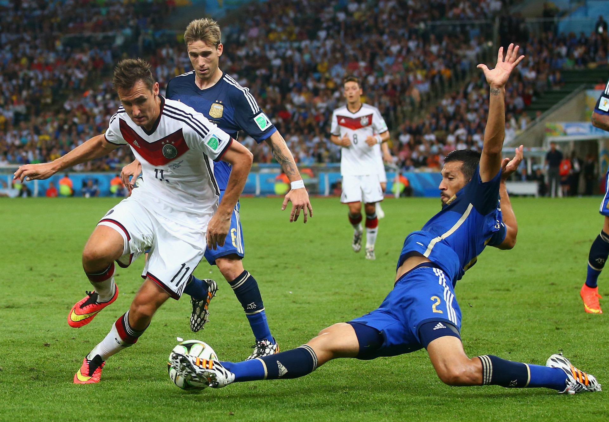

НОВОСТИ ФУТБОЛА
Черчесов: чтобы повысить уровень игрока, я должен доставить ему неудобство
Бывший наставник сборной России Станислав Черчесов поделился мыслями о требовательности футбольных тренеров, а также рассказал о сложностях в поиске общего языка с игроками. «Профессиональный футбол ставит барьеры, линии. Не я футбол придумал, есть писаные и неписаные законы. Если мы играем против команды, которая умнее, грамотнее, техничнее, мощнее, сильнее, я должен требовать, чтобы ты этому противостоял. Если я говорю: «Ладно, там тяжело», а потом ты выходишь на игру и ничего не можешь сделать… Чтобы повысить уровень [игрока], я должен доставить ему неудобство. Игроку невдомёк, что тренеру иногда тяжело делать такие вещи. Но есть профессия. Если ты какие‑то вещи в этой профессии не будешь делать, значит, ты в ней чужой. Ситуация подсказывает, каким тебе надо быть. Если ты всё время одинаково спящий… Если ты где‑то прикорнул, где‑то взорвался, где‑то колючий, это нормально. В «Ференцвароше» у меня были игроки 20 национальностей, с разными характерами, вероисповеданием, надо находить с ними общий язык. Они должны подстраивать базовые вещи под тебя, но с каждым ты должен находить точки соприкосновения», — сказал Черчесов в эфире «Матч ТВ». Напомним, последним местом работы 60-летнего российского специалиста остаётся венгерский клуб «Ференцварош», который он покинул в июле 2023 года. Ранее Станислав Черчесов возглавлял сборную России, до этого работал с польской «Легией», московским «Динамо», «Амкаром», «Тереком» (ныне «Ахмат»), сочинской «Жемчужиной» и «Спартаком».
Эндрик признан лучшим игроком чемпионата Бразилии 2023 года
Нападающий «Палмейраса» Эндрик признан лучшим игроком Лиги Паулиста прошедшего сезона. В прошедшем сезоне 17-летний бразилец сыграл 53 матча, забил 14 мячей и отдал одну голевую передачу. По итогам 2023 года «Палмейрас» стал чемпионом Бразилии, а также выиграл Суперкубок Бразилии. Летом 2024 года Эндрик перейдёт в мадридский «Реал» за € 45 млн. Контракт игрока с клубом рассчитан до лета 2030 года. Transfermarkt оценивает бразильца в € 55 млн. В нынешнем сезоне Эндрик сыграл девять матчей, забил два мяча и отдал одну голевую передачу. Эдрик является воспитанником «Палмейраса», прошёл путь от U17 до основной команды. Всего за первый состав 17-летний нападающий сыграл 85 матчей, забил 28 мячей и отдал три голевые передачи.
предыдущая следующая